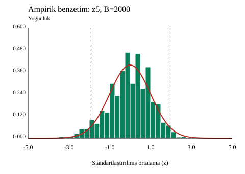
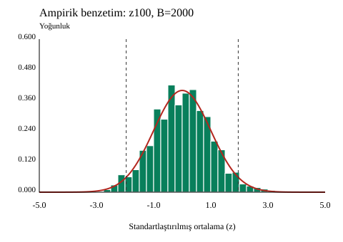

B05 — Ayrı ampirik benzetim: 2.000 tekrar
Bu uygulama üstel öğretim paketinden ayrıdır. Student Performance matematik verisindeki 395 G3 notu ampirik evrendir; sıfır notlu 38 kayıt korunmuştur.
Tohum 2026 ile geri koymalı 2000×100 çekim yapılmıştır. Her satırın ilk 5/30/100 gözleminden elde edilen ortalamalar iç içedir; bağımsız değildir. rep/ort5/ort30 sütunları B04 benzetimiyle aynıdır.
μ=10.415189873417722; σ=4.57563964146053 (N böleni). z=(ortalama−μ)/(σ/√n). Tablodaki SS, 2.000 tekrar üzerinden 1999 böleniyle hesaplanır.


Her iki grafikte yatay eksen −5 ile 5, düşey yoğunluk ekseni 0 ile 0,6’dır. Kırmızı eğri standart normal referansı; kesikli çizgiler ±1,96’dır. Grafikler hazır CSV’den çizilmiştir; R/SPSS ekran çıktıları değildir.
| Değişken | Tekrar | Ortalama | Örneklem SS |
|---|---|---|---|
| ort5 | 2000 | 10.367800000 | 2.078856412 |
| ort30 | 2000 | 10.419050000 | 0.844512238 |
| ort100 | 2000 | 10.415250000 | 0.458914195 |
| z5 | 2000 | -0.023158943 | 1.015915723 |
| z100 | 2000 | 0.000131406 | 1.002950912 |
|z100|≤1,96: 1892/2000 = %94,6; dışarıda 108 tekrar (%5,4). Bu benzetimin sonucudur; bütün örneklemler için garanti değildir.
İndir ve kontrol et
Ampirik test ZIP’i · 2.000 tekrar
Tam ayıklayın; b05-benzetim klasöründe py kontrol.py çalıştırın. Beklenen: 33 kontrol değeri eşleşiyor. R komutlarını R konsolunda çalıştırın; SPSS çalışma klasörünü ZIP içindeki rehbere göre seçin.
Python/R/SPSS rehberi · Beklenen altı sütun özeti · Özgün üretim kaydı